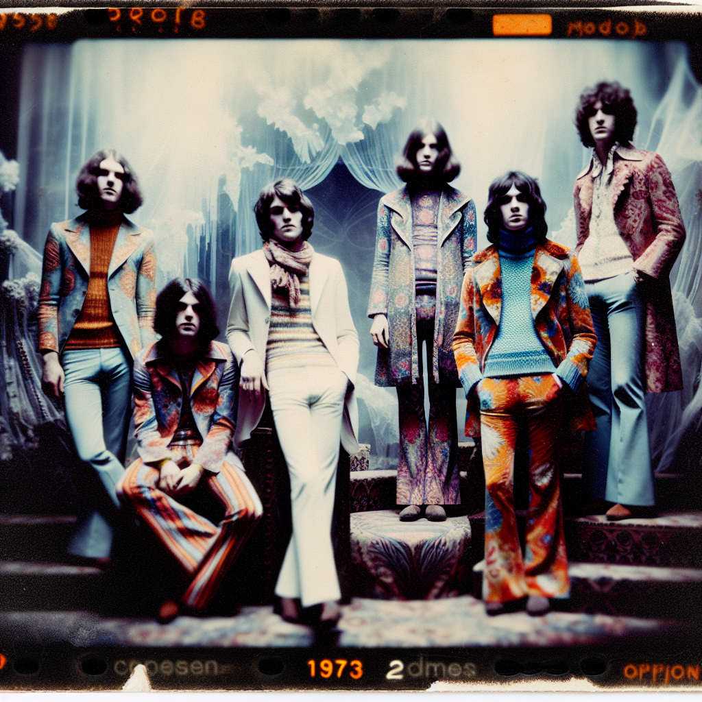

In the starlit haze of 1973, when the world was still reeling from the throes of the psychedelic 60s, a sonic mirage shimmered out of the red dust of the Australian outback: Echoes of the Mirage. A band that dared to blend the swirling, mind-bending landscapes of Psychedelic Rock with the haunting, otherworldly echoes of Ethereal Wave, creating what could only be described as Dreamy Dissonance—a genre as paradoxical as the band itself. At the helm stood Arlo "Stardust" Mitchell, a guitar wizard whose riffs conjured images of kaleidoscopic sunsets. His instrument, a battered Fender Jazzmaster, was a canvas for his cosmic explorations, bending reality with every strum. Beside him on keyboards was Luna “Moonglow” Sinclair, her fingers danced over the keys with an ethereal grace, weaving tapestries of sound that shimmered like ghostly auroras. Her Mellotron was the portal to other dimensions, an instrument that seemed to breathe with a life of its own. On bass, the enigmatic Orion “Echo” Blackwood, whose rumbling lines anchored the band’s celestial flights. His Rickenbacker 4001 was an extension of his own soul, a conduit for the deep, resonant undercurrents that flowed through the band’s music. Finally, there was Aurora “Whisper” Finn on drums, her rhythms were both primal and transcendent, played on a Ludwig Vistalite kit that glowed under the stage lights like a beacon from an alien realm. Echoes of the Mirage was not just a band; they were a journey—a trip through the dreamscape of sound itself.

### Album Title 1: "Celestial Reverberations"
**Track List:**
1. **Kaleidoscope Dunes**
---
### Album Title 2: "Phantom Horizons"
**Track List:**
1. **Spectral Voyage**
---
### Album Title 3: "Illusions in the Sand"
**Track List:**
1. **Sunset Serenade**
These album titles and track lists reflect the band's unique blend of Psychedelic Rock and Ethereal Wave, capturing the essence of their dreamy, otherworldly soundscapes and evolving themes.